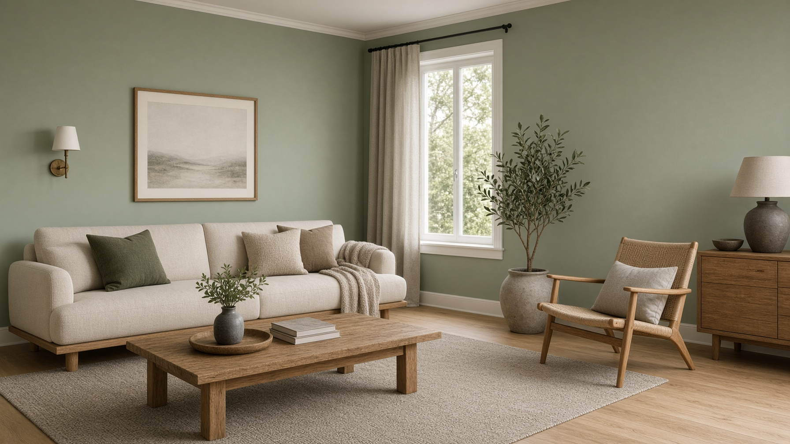

Utkast. Tekst og bilder justeres med dere. Ingenting er lagt ut i deres navn.

Semsveien 110 · Nøtterøy
Maler på Nøtterøy. Tim Robert Larsen, 454 52 186.
454 52 186
Oppdrag
Color Malerservice tar malerarbeid på Nøtterøy. Semsveien 110.
Ring 454 52 186.
Vegger og tak.
Fasade.
Semsveien 110.
Kontakt
Tim Robert Larsen. Semsveien 110, 3140 Nøtterøy.